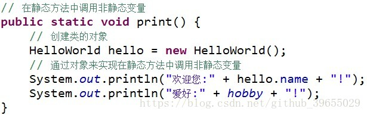
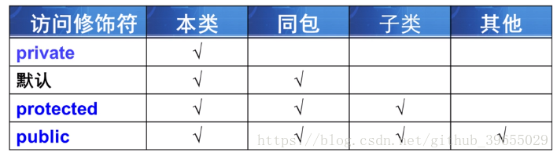

JAVA知识点总结篇（二）原文出处:本文由博客园博主村雨1943提供。
原文连接:https://www.cnblogs.com/cunyu1943/p/11605062.html
数组
一维数组
方法
- 定义语法：
访问修饰符 返回值类型 方法名(参数列表){ 方法体； }；
- 分类：
- 无参无返回值方法；
- 无参带返回值方法；
- 带参无返回值方法；
- 带参带返回值方法；
- 调用方法：
对象名.方法名()
- 调用带参方法时，必须保证实参的数量，类型，顺序和形参一一对应；
- 调用方法时，实参不需要指定数据类型；
- 方法的参数既可以是基本数据类型，也可以是引用数据类型，当有多个参数时，多个参数间以逗号分割；
- 重载：在同一个类中，方法名相同，方法参数个数、顺序或类型不同称为方法的重载，与方法的修饰符或返回值无关系；
类与对象
- 类是模子，确定对象将拥有的特征(属性)和行为(方法)，特点：类是对象的类型，具有相同属性和方法的一组对象的集合；
- 定义类的步骤：
- 使用对象的步骤：
- 创建对象：
类名 对象名 = new 类名()；
- 使用对象：
引用对象的属性：对象名.属性；
成员变量与局部变量
- 成员变量：在类中定义，用来描述对象将要有什么，既可被本类的方法使用，还能供其他类的方法使用；
- 局部变量：在类的方法中定义，在方法中临时保存数据，只能在当前方法中使用；
- 区别：
- 局部变量作用域仅限于定义它的方法，成员变量的作用域在整个类内部都是可见的；
- 成员变量有初始值，但局部变量未赋予初始值；
- 不同方法中可以有同名局部变量，同一方法中，不允许有同名局部变量；
- 两者重名时，局部变量优先级更高；
构造方法
- 使用new+构造方法，创建一个新对象；
- 构造方法是定义在Java类中的一个用来初始化对象的方法，构造方法与类同名且无返回值；
- 当无指定构造方法时，系统会自动添加无参的构造方法；
- 当有指定构造方法，无论是有参、无参的构造方法，都不会自动添加无参的构造方法；
- 构造方法的重载：方法名相同，但参数不同的多个方法，调用时会自动根据不同的参数选择相应方法；
- 构造方法不但可以给对象的属性赋值，还可以保证给对象的属性赋一个合理的值；
static
- static修饰的成员称为静态成员或类成员，属于整个类所有，而不是某个对象所有，即被类的所有对象所共享。静态成员可以使用类名直接访问，也可以使用对象名进行访问，static可以修饰变量、方法和代码块；
- 静态成员属于整个类，当系统第一次使用该类时，就会为其分配内存空间直到该类别卸载才会进行资源回收；
- static修饰的方法称为静态方法或类方法，静态方法中可以直接调用同类中的静态成员，但不能直接调用非静态成员，如果想要在静态方法中调用非静态变量，可以通过创建类的对象，然后通过对象来访问非静态变量；
public class HelloWorld{
String name = "村雨";
static String hobby = "basketball";
public static void print(){
System.out.println("姓名" + name);
System.out.println("爱好" + hobby);
}
}

面向对象特点
封装
- 概念：将类的某些信息隐藏在类内部，不允许外部程序直接访问，而是通过该类提供的方法来实现对隐藏信息的操作和访问；
- 好处：只能通过规定的方法访问数据，隐藏类的实例细节，方便修改和实现；
- 实现步骤：
- 修改属性可见性，设为private；
- 创建getter/setter方法用于属性读写；
- 在getter/setter方法中加入属性控制语句，对属性值的合法性进行判断；
继承
- Java中是单继承；
- 优点：
- 重写：返回值类型，方法名，参数类型及个数都要与父类继承的方法相同，才叫方法的重写；
- 继承的初始化顺序
- 初始化父类再初始化子类；
- 先执行初始化对象中属性，再执行构造方法中的初始化；
- final
- 修饰类，则该类不允许被继承；
- 修饰方法，则该方法不允许被覆盖(重写)；
- 修饰属性：则该类属性不会进行隐式初始化(类的初始化属性必须有值)活在构造方法中赋值(但只能选其一)；
- 修饰变量，则该变量的值只能赋一次值，即变为常量；
- super
- 子类构造过程中必须调用父类构造方法；
- 若子类构造方法中既没有显示调用父类构造方法，而父类有没有无参的构造方法，则编译出错；
- 若显式调用构造方法，必须在子类构造方法的第一行；
- 若子类构造方法中未显示调用父类的构造方法，则系统默认调用父类无参的构造方法；
- equals()方法：比较的是对象的引用是否指向同一块内存地址；
多态
- 引用多态
- 父类引用可以指向本类对象；
- 父类引用可以指向子类对象；
- 方法多态
- 创建本类对象时，调用的方法为本类方法；
- 创建子类对象时，调用的方法为子类重写的方法或者继承的方法；
- 引用类型转换
- 向上类型转换(隐式/自动类型转换)，是小类型到大类型的转换，无风险；
- 向下类型转换(强制类型转换)，是大类型到小类型，存在风险；
- instanceof运算符，用来解决引用对象的类型，避免类型转换的安全性问题；
包
- 作用：
- 必须放在Java源程序的第一行，包名间可以使用
.号隔开；
- 系统中的包
- java.(功能).(类)
- java.lang.(类) 包含Java语言基础的类；
- java.util.(类) 包含Java语言中各种工具类；
- java.io.(类) 包含输入、输出相关功能的类；
修饰符

内部类
- 定义：定义在另一个类里面的类，与之对应，包含内部类的类被称为外部类；
- 作用
- 提供更好的封装，可把内部类隐藏在外部类之内，不允许同一个包中的其他类访问该类；
- 内部类的方法可以直接访问外部类的所有数据，包括私有的数据；
- 内部类所实现的功能使用外部类同样可以实现，只是有时使用内部类更方便；
- 分类
- 成员内部类；
- 静态内部类；
- 方法内部类；
- 匿名内部类；
- 调用方式
public class Test{
public class Demo{
}
public static void main(String[] args) {
Test test = new Test();
Demo demo = test.new Demo();
}
}
内部类 对象名 = 外部类对象.new 内部类();